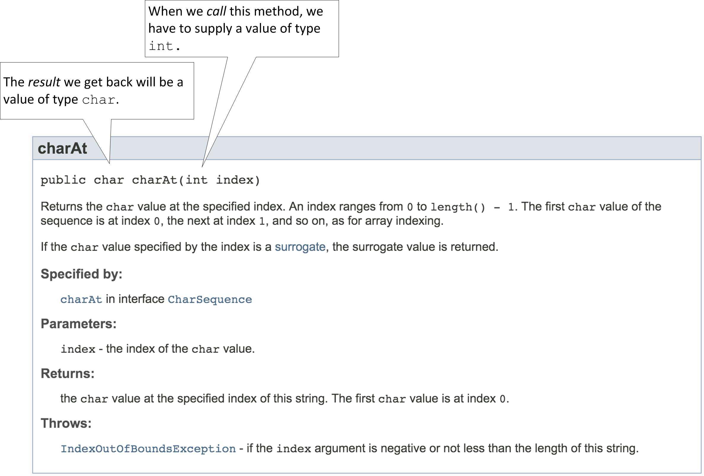

Java API
How did we know about the length method and how to use it? Well, the individuals who wrote the String class also published documentation on how the class may be used. In the documentation, they describe the API ("Application Programmer Interface") of the String class, which tells how Strings are constructed and what methods are available to our String instances.
Follow the link below and find the description of the class String in the Java API
documentation (search for the package "java.lang" in the list at the top left, and then scroll through the classes).
http://docs.oracle.com/javase/8/docs/api/
Start by scrolling down from the top of the documention page. Note there is some description, then a section "Field Summary", followed by "Constructor Summary", and finally, "Method Summary". The method summaries are always one-sentence descriptions of what the methods do. Click on the method name -- a link takes you to a more detailed description. Use the Back button to return.
Locate the description of the length method.
As you can see, String is not simple. You do not need to memorize any part of this documentation. However, you will refer to it frequently throughout your time as a Java programmer. There is a huge amount of information here, and many things that don't yet make any sense to us. Do not worry -- we don't have to understand it all now.
Other Methods
Let's explore other methods of the String class.
Look for a method named charAt, which returns a single character
from the string. Read its detailed description (ignoring details that don't make any sense yet).

In particular look at the first line as shown above.
- The method has a parameter
indexof typeint. In order forcharAtto perform its job you must specify an integer argument corresponding to this parameter. Below, the "Parameters" section provides a brief description of what it means. In this case, the argument indicates the position of the character you'd like to inspect. (The positions are numbered from the left, starting at zero.) - The method has a return value of type
char. This is the result we'll get when calling the method. Below, the "Returns" section provides a brief description.
Add the following to your code:
char theChar = message.charAt(0); System.out.println(theChar); theChar = message.charAt(1); System.out.println(theChar);Try some other arguments besides 0 and 1. What is the largest index you can use without getting an error?